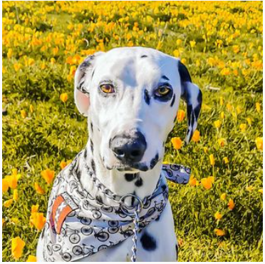

Dalmata Leia Andrea

Hola, mi nombre es leia, soy un dalmata, tengo 3 años y amo correr y jugar con mis juguetes. Por supuesto que tengo responsabilidades, tengo que desestresar a mis padres humanos y para eso los sacos a pasear. Te invito a conocer mas de mi vida.
No se porque, pero mi humana se esta quedando en casa. Aveces conversa con su computador y yo trato de llamar su atención con algún juguete. Se que los humanos necesitan actividad física para liberar algo que se llama endorfinas, por eso siempre le llevo mi juguete para que salga al patio a jugar conmigo. A veces me resulta y otras no... 🐾
Mi humana me captó hoy mientras trataba de invitarla a jugar, pero ella no pudo dejar de conversar con su computador. Mañana lo intentaré de nuevo.... deséenme suerte😜 .